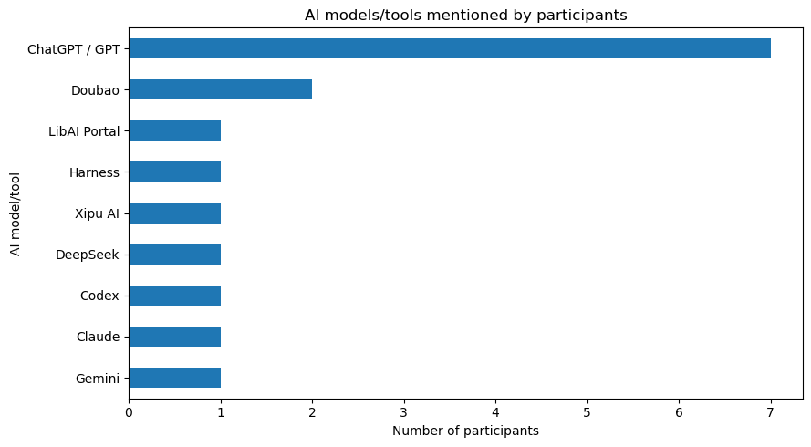
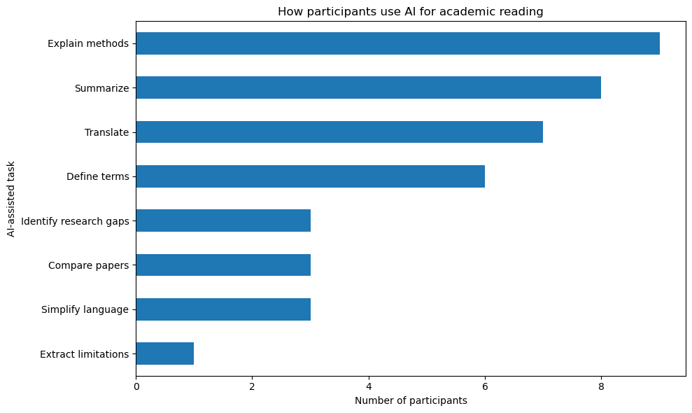
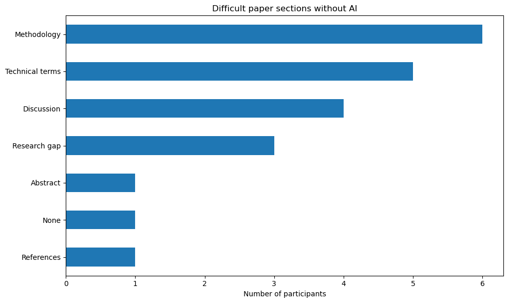
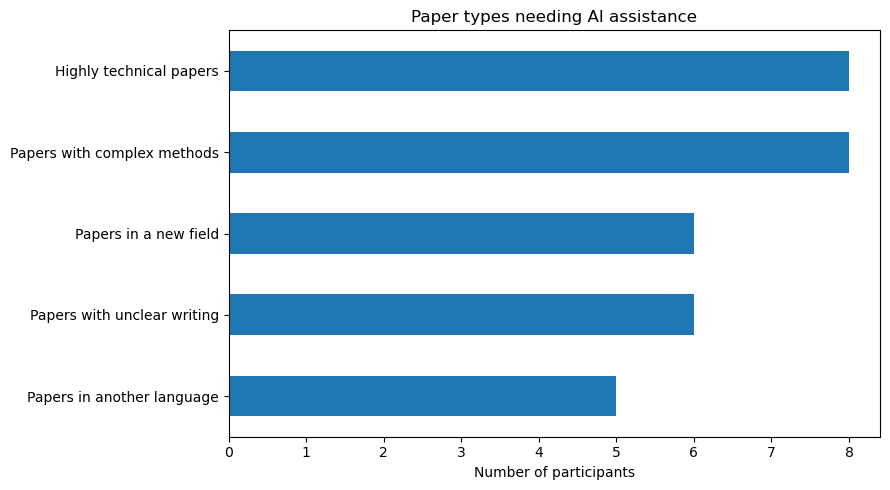
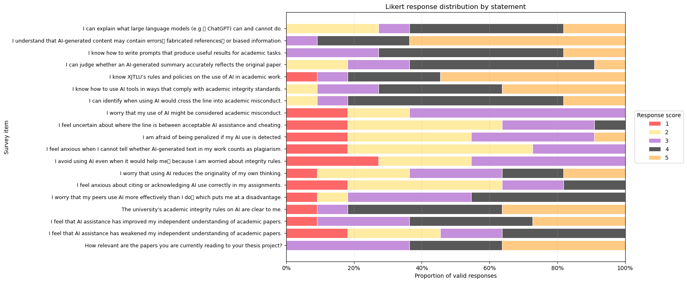
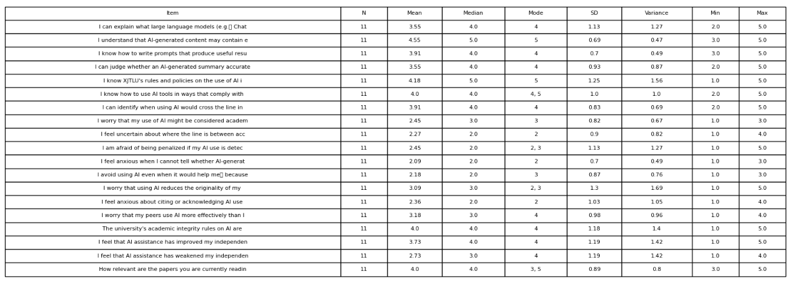
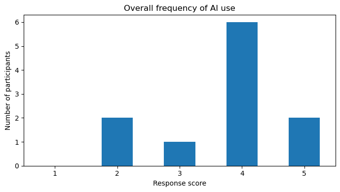
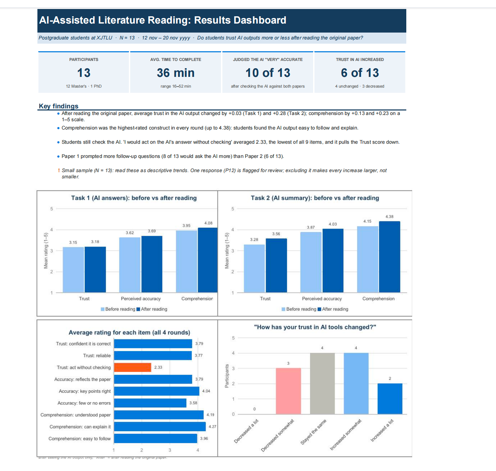

How does an AI-assisted literature reading and summarization workflow shape XJTLU students'
confidence and comprehension of academic papers relevant to their thesis projects?
Target Users
Population
XJTLU Masters and PhD students
working on thesis projects
Institution
Xi'an Jiaotong-Liverpool University (XJTLU)
Participant CharacteristicsAcademic paper readersAI tool users
Team Members
Member 1Kun Zhang (张坤)
Member 2Minghao Yu (余铭昊)
Member 3Letizia Marceline Maukar
Member 4Diego Lopez
About This Project
This study is part of the ADS401 Evaluation Methods
and Statistics module at XJTLU. Our group explores
how AI-assisted reading and summarization tools
influence students' independent comprehension
of academic literature in the context of thesis research.
Understanding the aims and expected outcomes of our study.
Research Question
How does AI-assisted literature reading
and summarization influence students' independent
comprehension of academic papers?
Research Objectives
Derived from the survey constructs and the experimental reading tasks, this study is guided by five primary objectives:
Evaluate Confidence Calibration: To measure the gap between students' confidence in AI-generated answers/summaries and the actual accuracy of those outputs after independent verification.
Assess the Impact of Verification: To determine how reading the original text changes students' confidence, perceived accuracy, and clarity of understanding.
Identify Moderating Variables: To investigate whether AI literacy, frequency of tool use, discipline, and language background influence the size of the confidence-accuracy gap.
Explore Academic Integrity Anxiety: To examine how students' anxiety regarding AI-related academic misconduct relates to their AI usage patterns and verification behaviors.
Analyze Workflow Changes: To qualitatively explore how AI assistance alters students' independent comprehension, note-taking, and literature synthesis processes.
This survey investigates how XJTLU postgraduate students use AI when reading academic papers related to their projects. It aims to capture a comprehensive picture of the modern postgraduate research workflow, specifically focusing on the intersection of AI assistance, academic integrity, and independent learning.
The questionnaire is divided into seven distinct parts:
Part A (Demographics): Collects basic background information, including student status, level of study, and departmental affiliation.
Part B (Background & Language): Establishes a baseline for the student's thesis progress, prior experience with academic reading, and language proficiency.
Part C (AI Literacy): Measures the student's self-reported ability to use AI tools effectively, understand their limitations, and navigate university policies.
Part D (AI in Reading & Writing): Explores the specific workflows students employ when using AI, including the tasks they delegate to AI, their prompting language, and their verification habits.
Part E (Academic Integrity Anxiety): Assesses the level of uncertainty or anxiety students feel regarding the boundaries between acceptable AI assistance and academic misconduct.
Part F (Perceived Effects on Understanding): Captures students' subjective beliefs about whether AI assistance has strengthened or weakened their independent comprehension skills over time.
Part G (Discipline, Language & Context): Investigates how AI reliance might vary based on the technical difficulty of the paper, the relevance to their thesis, and whether they are reading in their first or second language.
By gathering this data, the survey provides essential context for understanding how students can be better supported in using AI responsibly, confidently, and in a way that enhances rather than hinders their independent research skills.
This study employed a mixed-methods, cross-sectional survey design to investigate AI usage among XJTLU postgraduate students. The research integrated quantitative Likert-scale items (measuring AI literacy, integrity anxiety,
and independent comprehension) with qualitative open-ended questions (capturing reading workflows and verification habits). This approach allowed for both statistical comparison across demographic groups (e.g., discipline, language background)
and thematic exploration of how students actually interact with AI tools.
Data was collected via an online questionnaire and subsequently processed using a programmatic workflow to ensure reproducibility and accuracy. Using Jupyter Notebook and Python, the raw data was cleaned,
filtered for eligibility, and structured using pandas. NumPy was utilized to compute composite construct scores and standardize variables for calibration analysis. This automated approach ensured that all
data transformations were transparent, auditable, and ready for downstream statistical analysis.
ADS401 / Design Method
Research Design Method
Research approach, participants, data collection methods, and analysis techniques used in our study.
Research Design
This study adopts a mixed-methods research design with a quantitative-dominant,
within-subject (repeated-measures) structure. All participants are exposed to the
same two tasks and the same conditions, allowing each participant's responses to
serve as their own baseline for comparison.
The study examines how XJTLU students integrate AI tools into academic literature reading
and summarization. It combines quantitative measures — Likert-scale ratings of confidence,
perceived accuracy, and clarity of understanding (collected both before and after reading
the paper), accuracy of AI-assisted answers against the actual paper, time taken to identify
each element, number of AI queries used, and the AI service used.
Click the link to view the questionnaire: Questionnaire
Tasks Given
Task 1: Paper Comprehension
Participants use AI only, without reading the paper, to identify the research question,
method, independent and dependent variables, and limitations; they then read the paper
and verify their answers. Confidence, perceived accuracy, and clarity are rated before
and after reading.
Participants evaluate an AI-generated summary on Likert-scale items before reading the paper,
then re-rate confidence, judged accuracy, and clarity after reading, and indicate whether
they would ask AI for clearer understanding.
Statistical methods used to evaluate the collected survey data and task data.
Survey Evaluation Method
This study employed a mixed-methods, cross-sectional survey design to investigate how XJTLU postgraduate students use AI tools in their academic work. The evaluation focused on four core dimensions: (1) the frequency and types of AI tools used, (2) the specific tasks students delegate to AI during academic reading, (3) their self-reported AI literacy and academic integrity anxiety, and (4) their perceived effects of AI on independent comprehension.
Data Collection and Processing
Data was collected via an online questionnaire comprising Likert-scale items, multiple-response questions, and open-ended prompts. Raw responses were exported as a structured CSV dataset and processed using Jupyter Notebook with Python, utilizing pandas for data manipulation and NumPy for numerical operations. The cleaning pipeline involved filtering ineligible responses, handling missing values, and standardizing bilingual column headers.
A custom Python script was developed to parse Likert-scale labels (e.g., mapping A.Never through E.Almost every time to ordinal scores 1–5). Free-text responses regarding AI tool usage were normalized using an editable alias dictionary to group variants (e.g., matching "GPT" and "ChatGPT" under a single model category) before generating frequency distributions and descriptive statistics.
Analytical Strategy
Descriptive statistics (counts, percentages, means, medians, and standard deviations) were generated for all quantitative items. Multi-response questions (e.g., tasks performed with AI, difficult paper sections) were analyzed by calculating the proportion of participants selecting each option. To assess the relationship between opposing perceptions of AI's impact, a reverse-scored item (Q50: "AI weakened my independent understanding") was computed and correlated with its positive counterpart (Q49) using Spearman's rank correlation. All resulting tables and charts were exported as CSVs for reporting.
Brief Survey Results Overview
Analysis of the current dataset (N = 11) reveals several distinct patterns in AI usage and perception among the surveyed postgraduate students:

Figure 1. AI models/tools mentioned by participants (multiple responses allowed). ChatGPT/GPT dominates usage.
AI Tool Preference:ChatGPT / GPT was the dominant tool, mentioned by 63.6% of participants (n = 7). Doubao followed at 18.2% (n = 2), while Claude, Gemini, DeepSeek, and institutional tools like Xipu AI were each mentioned by a single participant (9.1%).

Figure 2. How participants use AI for academic reading tasks.
Primary Use Cases: Students primarily use AI to explain research methods (81.8%, n = 9) and summarize papers (72.7%, n = 8). Translation (63.6%) and defining terms (54.5%) were also highly cited, whereas extracting limitations was the least common task (9.1%).

Figure 3a. Paper sections participants find most difficult without AI.

Figure 3b. Types of papers participants think need AI assistance most.
Reading Challenges: When reading without AI, participants found Methodology (54.5%) and Technical Terms (45.5%) the most difficult sections. Consequently, 72.7% felt that highly technical papers and those with complex methods most required AI assistance.

Figure 4. Likert response distribution by survey item.

Figure 4b. Legend for Figure 4.
Perceived Impact and Calibration: Participants generally felt AI improved their independent understanding (Mean = 3.73 on a 5-point scale). However, when asked if AI weakened their understanding, the mean was 2.73. After reverse-scoring the negative item, a strong positive Spearman correlation (r = 0.828) emerged between the two items, indicating that students who perceive benefits from AI are also acutely aware of its potential to undermine their independent thinking.

Figure 5. Overall frequency of AI use in academic work (Q20).
Frequency of Use: The sample reported high overall AI usage in academic work (Median = 4.0, "Often"), with 72.7% of participants selecting "Often" or "Almost every time."
Note: Given the small sample size (N = 11), these findings are descriptive and should not be generalized to the broader student population. They serve as an initial baseline for understanding student workflows and perceptions.
AI Reading Study — Results Dashboard
The dashboard below summarizes the two reading tasks, in which participants rated
trust, perceived accuracy, and comprehension
of AI-generated output before and after reading the original paper.

Figure 6. AI-assisted literature reading results dashboard (N = 13): average ratings before vs. after reading for Task 1 (AI answers) and Task 2 (AI summary), plus per-item average ratings across all four rounds.
Note: Given the small sample size (N = 13), these results are descriptive trends rather than generalizable findings. One response (P12) is flagged for review.
ADS401 / Conclusion
Future Work
In summary and what we suggest for future research directions based on our findings.
ADS401 / Project Overview
Research Overview
Evaluating AI Integration at XJTLU
Research Question
How does an AI-assisted literature reading and
summarization workflow affect XJTLU students'
unaided comprehension of academic papers relevant
to their thesis projects?
Target Users
Population
XJTLU undergraduate and postgraduate students
working on thesis projects
Institution
Xi'an Jiaotong-Liverpool University (XJTLU)
Relevant Context
Students who regularly read academic papers
as part of their thesis literature review
Key CharacteristicsThesis studentsAcademic paper readersAI tool users
Team Members
Member 1Kun Zhang (张坤)
Member 2Minghao Yu (余铭昊)
Member 3Letizia
Member 4Diego Lopez
About This Project
This study is part of the ADS401 Evaluation Methods
and Statistics module at XJTLU. Our group explores
how AI-assisted reading and summarization tools
influence students' independent comprehension
of academic literature in the context of thesis research.